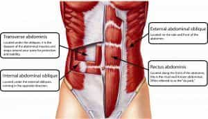
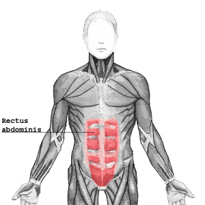
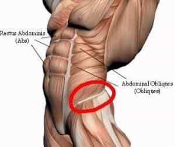
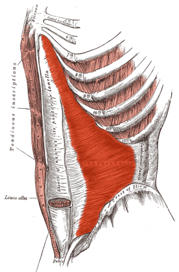
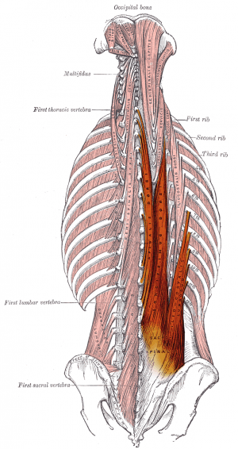
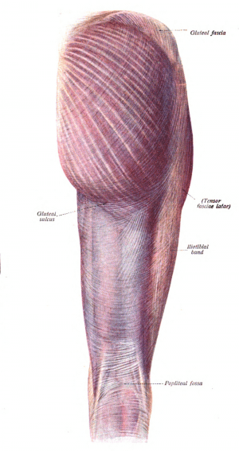
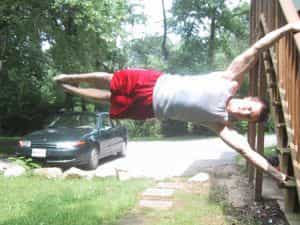
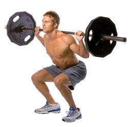
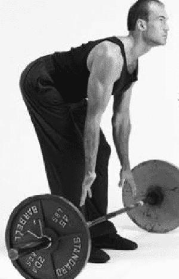

< < < Back
The Thrust Is A Must (The Importance Of Core Strength) – Return Of Kings
Yes, gentle reader, you have read the article title correctly. But bear in mind that this is not another of my several articles on human sexuality, and how you can bang like a champ. I think I have been quite instructive in that regard.
No, when I say that the thrust is a must, I use it in a purely non-sexual context. I use it to refer one of the fundamental links in the chain of your physical well being, a chain of muscles that is used in essentially all sports and most actions in your daily life. Those are the muscles of your core and hips.

An Anatomy Lesson
A lot of physical trainers, athletes, and sports broadcasting talking heads will talk about “the core” in only the vaguest of terms, leaving the uninitiated to the conclusion that it is some mythical muscle in the center of the body. That same uninitiated person will likely be confused about how to train this illusory muscle in his torso.
The core (or rather, the torso) contains an enormous amount of muscles, but the ones that are colloquially thought of as “the core” consist of:
The Rectus Abdominus, what the common man thinks of as the “abdominal” muscle

The external and internal obliques

The transverse abdominus

The various small muscles of the spine (collectively called the erector spinae)

And the muscles of the hips (gluteus maximus and minimus, the femoral abductors and adductors, and etc.)

Why Train Them?
For the very simple reason that if you wish to do ANYTHING physical, you’re going to need to train the core, and train it good and hard.
Of course, there’s the aesthetic benefits of having a defined abdomen, obliques, and the lean “V-Tapered” hips that the women love. But as it is a common tenet of the ‘sphere that only a whore trains purely to look good to the opposite sex , we will eschew that—although training the core in the way you will learn here will indeed make you look good.
Instead, analyzing the benefits of core training will reveal many ways that a strong torso will bring “Great honor upon your house”.
Martial artists have long been aware of the benefits of core training—why do you think so many styles demand that their students perform kiais as they strike? The sudden clenching and tensing of the abdomen adds power to the blows. Beyond that, proper punching and kicking form requires a muscular snapping of the waist, shoulders and/or hips. And for grappling based martial arts such as judo, jiu-jitsu both traditional and Brazilian, and all the myriad types of wrestling, you’re going to need a strong torso to pick up, throw, and subdue your opponents. Simply put, if you’re not training the core, you’re not going to fight well.
Competitive weightlifters too need to develop tremendous torso strength, as those muscles will essentially bolster and protect the entire body—especially the vulnerable spine and internal organs—under the pressure of enormous weight.
Any sport that requires upper body techniques, be it baseball, football, basketball, golf, rowing, and so on, can only be enhanced with proper core development. And go to back to the double entendre that is the title… yeah, having a strong core will make your sex life better.
How To Train the Core
So, having convinced you of the necessity of core training, you are now likely asking how it can be done. There are of course a million glamour exercises you can do to train the core, but you all know that I eschew those. Like most things, the best way to train the core is with heavy compound exercises, both weighted and calisthenic.
Of course, the calisthenic techniques I have already taught you will come in handy: the bridge, the L-Sit, the hanging leg raise, and the gymnastic static poses.
Perhaps the ultimate calisthenic core exercise is the human flag, an exercise that I have not actually trained yet, but I’ll be sure to teach you about once I’ve mastered it.

Ironheads are certainly not neglected in core training either: The overhead press can be very easily converted into a core training method with the overhead farmer’s walk:
To perform this exercise, first do the overhead press as detailed in this article. Then, keep the back straight and avoid further bending, look straight ahead, and begin walking. Your core muscles will tense tremendously in order to keep the weight stable and the back straight.
Two of the other “core four” lifts will inherently train the core, those being the squat and the deadlift. More detailed explanations of these lifts will come in the future, but for now…
The squat is performed by resting the bar on the flexed trapezius muscles. Keeping the feet shoulder width apart, and the feet pointing naturally (ie: what feels good and natural to the individual), squat down, making sure that your back is “locked”—ie: not bent over— your knees are not turned in, and your hips are at least parallel with the knees. Preferably, you should go “ass to grass”, but make sure you keep your back tight.

The deadlift is done by “standing at attention”:, making sure the bar is touching your shins, lock the tension in your lower back—in other words, keep it hollow—, and look your eyes up to the sky while keeping the head straight (this ensures proper spinal alignment). Maintaining that back tension, bend down with the legs, but keep the torso straight, and grab the bar without looking.
While grabbing onto the bar, lift with the legs until they are straight, then clench the buttocks and then lift with the hips, lifting the back straight. Make sure to “feel” the push through the floor, and keep the abdomen tight.

Beyond that, just practicing whatever athletic movement you’re interested in will train the core: throwing punches, swinging a golf club, and so forth.
Conclusion
In reading this, you might have noticed how so many fundamental maneuvers target the core. There are two things you should take away from that: 1) That the core is highly important to basic human function and 2) There’s no need to do any specific isolation exercises for it, as doing those basic lifts and calisthenics will sufficiently hit the core.
If “weak hands make a weak man”—and they do—then “the thrust is a must” can be another fitness aphorism for all physical culturists.
Read More: Why You Should Skip Crunches And Do These Ab Exercises Instead